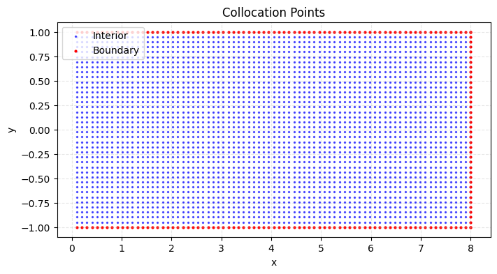
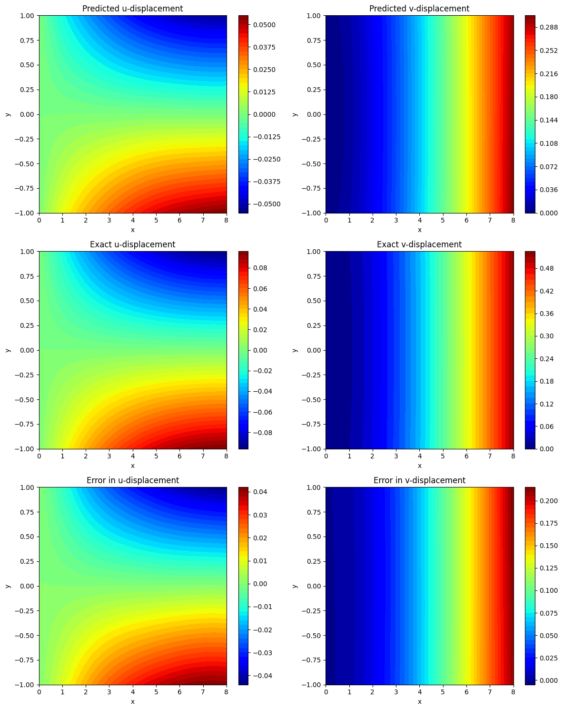

import torch
import torch.nn as nn
import torch.optim as optim
import numpy as np
import matplotlib.pyplot as plt
# Set default tensor type and device
torch.set_default_dtype(torch.float64)
# Set random seeds for reproducibility
seed = 42
np.random.seed(seed)
torch.manual_seed(seed)
if torch.cuda.is_available():
torch.cuda.manual_seed(seed)
# Check if MPS is available
device = torch.device('cuda' if torch.cuda.is_available() else 'cpu')
# Material and geometric parameters
E = 1e3 # Young's modulus
nu = 0.25 # Poisson's ratio
P = -2.0 # Applied load
L = 8.0 # Length of the beam
W = 2.0 # Width of the beam
b = 1.0 # Depth of the beam
I = b * W**3 / 12.0 # Moment of inertia
lambda_ = E * nu / ((1 + nu)*(1 - 2*nu)) # Lamé's first parameter
mu = E / (2*(1 + nu)) # Lamé's second parameter (shear modulus)
# Generate interior collocation points (excluding x=0)
Nx, Ny = 80, 40 # Original grid size
x = np.linspace(0, L, Nx)[1:] # Exclude x=0 point
y = np.linspace(-W/2, W/2, Ny)[1:-1] # Exclude top and bottom boundaries
X, Y = np.meshgrid(x, y)
X_star = np.hstack((X.flatten()[:, None], Y.flatten()[:, None]))
# Generate boundary points
# Right boundary (x = L)
y_right = np.linspace(-W/2, W/2, Ny)
x_right = L * np.ones_like(y_right)
X_right = np.hstack((x_right[:, None], y_right[:, None]))
# Top boundary (y = W/2)
x_top = np.linspace(0, L, Nx)[1:] # Exclude x=0
y_top = (W/2) * np.ones_like(x_top)
X_top = np.hstack((x_top[:, None], y_top[:, None]))
# Bottom boundary (y = -W/2)
x_bottom = np.linspace(0, L, Nx)[1:] # Exclude x=0
y_bottom = (-W/2) * np.ones_like(x_bottom)
X_bottom = np.hstack((x_bottom[:, None], y_bottom[:, None]))
# Combine all boundary points
X_boundary = np.vstack((X_right, X_top, X_bottom))
# Convert to torch tensors
x_collocation = torch.tensor(X_star[:, 0:1], requires_grad=True, device=device)
y_collocation = torch.tensor(X_star[:, 1:2], requires_grad=True, device=device)
x_boundary_tensor = torch.tensor(X_boundary[:, 0:1], requires_grad=True, device=device)
y_boundary_tensor = torch.tensor(X_boundary[:, 1:2], requires_grad=True, device=device)
# Plot collocation points
plt.figure(figsize=(8, 4))
# Interior points (blue)
plt.scatter(X_star[:, 0], X_star[:, 1], c='blue', s=2, alpha=0.6, label='Interior')
# Boundary points (red)
plt.scatter(X_boundary[:, 0], X_boundary[:, 1], c='red', s=4, label='Boundary')
plt.title('Collocation Points')
plt.xlabel('x')
plt.ylabel('y')
plt.legend()
plt.grid(True, linestyle='--', alpha=0.3)
plt.show()
class Swish(nn.Module):
def forward(self, x):
return x * torch.sigmoid(x)
class Net(nn.Module):
def __init__(self):
super(Net, self).__init__()
hdim = 20
self.layers = nn.Sequential(
nn.Linear(2, hdim),
Swish(),
nn.Linear(hdim, hdim),
Swish(),
nn.Linear(hdim, hdim),
Swish(),
nn.Linear(hdim, hdim),
Swish(),
nn.Linear(hdim, 2)
)
def forward(self, x, y):
inputs = torch.cat((x, y), dim=1)
outputs = self.layers(inputs)
return outputs[:, 0:1], outputs[:, 1:2]
# Initialize model and move to device
model = Net().to(device)
# Initialize weights properly
torch.manual_seed(42)
for m in model.layers:
if isinstance(m, nn.Linear):
nn.init.xavier_normal_(m.weight)
nn.init.zeros_(m.bias)
def linear_distance(x, L):
"""Current simple linear distance function"""
return x/L
def polynomial_distance(x, L, n=3):
"""Polynomial distance function
n: polynomial degree (odd number)"""
return (x/L)**n * (1 - (x/L))**(n-1) + x/L
# The correct strong form enforcement
def net_u(x, y):
u_NN, _ = model(x, y)
# Analytical solution at x=0
g_u = (P * y) / (6 * E * I) * ((2 + nu) * (y**2 - W**2/4))
# Distance function x/L
weight = linear_distance(x, L)
return g_u * (1-weight) + weight * u_NN
def net_v(x, y):
_, v_NN = model(x, y)
# Analytical solution at x=0
g_v = -(P) / (6 * E * I) * (3 * nu * y**2 * L)
# Distance function x/L
weight = linear_distance(x, L)
return g_v * (1-weight) + weight * v_NN
def strain(x, y):
u = net_u(x, y)
v = net_v(x, y)
u_x = torch.autograd.grad(u, x, grad_outputs=torch.ones_like(u),
create_graph=True)[0]
u_y = torch.autograd.grad(u, y, grad_outputs=torch.ones_like(u),
create_graph=True)[0]
v_x = torch.autograd.grad(v, x, grad_outputs=torch.ones_like(v),
create_graph=True)[0]
v_y = torch.autograd.grad(v, y, grad_outputs=torch.ones_like(v),
create_graph=True)[0]
epsilon_xx = u_x
epsilon_yy = v_y
epsilon_xy = 0.5 * (u_y + v_x)
return epsilon_xx, epsilon_yy, epsilon_xy
def stress(x, y):
epsilon_xx, epsilon_yy, epsilon_xy = strain(x, y)
sigma_xx = lambda_ * (epsilon_xx + epsilon_yy) + 2 * mu * epsilon_xx
sigma_yy = lambda_ * (epsilon_xx + epsilon_yy) + 2 * mu * epsilon_yy
sigma_xy = 2 * mu * epsilon_xy
return sigma_xx, sigma_yy, sigma_xy
def traction_x(y):
return torch.zeros_like(y)
def traction_y(y):
return P * (y**2 - y * W) / (2 * I)
def potential_energy():
# Get strains and stresses at collocation points
epsilon_xx, epsilon_yy, epsilon_xy = strain(x_collocation, y_collocation)
# Compute strain energy density
# First term: λ(εxx + εyy)^2
psi_1 = 0.5 * lambda_ * (epsilon_xx + epsilon_yy)**2
# Second term: μ(εxx^2 + εyy^2 + 2εxy^2)
psi_2 = mu * (epsilon_xx**2 + epsilon_yy**2 + 2 * epsilon_xy**2)
# Total strain energy density
strain_energy_density = psi_1 + psi_2
# Alternative: Compute strain energy density using stress-strain product
# Get stresses at collocation points
# sigma_xx, sigma_yy, sigma_xy = stress(x_collocation, y_collocation)
# strain_energy_density = 0.5 * (
# sigma_xx * epsilon_xx +
# sigma_yy * epsilon_yy +
# 2 * sigma_xy * epsilon_xy
# )
# Numerical integration over domain
dx = L / (Nx - 1)
dy = W / (Ny - 1)
element_area = dx * dy
# Internal energy = ∫∫ Ψ dxdy
internal_energy = strain_energy_density.sum() * element_area
# External work from traction on right boundary
# Get displacements on right boundary
u_right = net_u(x_boundary_tensor[:Ny], y_boundary_tensor[:Ny])
v_right = net_v(x_boundary_tensor[:Ny], y_boundary_tensor[:Ny])
# Traction components on right boundary
t_x_right = torch.zeros_like(y_boundary_tensor[:Ny])
t_y_right = -P * (y_boundary_tensor[:Ny]**2 - y_boundary_tensor[:Ny] * W) / (2 * I)
# External work = -∫ t·u dΓ
external_work = -(t_x_right * u_right + t_y_right * v_right).sum() * (W/(Ny-1))
# Total potential energy = Internal + External
total_energy = internal_energy + external_work
return total_energy
# Training loop
def closure():
optimizer.zero_grad()
energy = potential_energy()
energy.backward()
return energy
print("Initial energy:", potential_energy().item())
# First train with Adam
optimizer = optim.Adam(model.parameters(), lr=1e-5)
num_epochs = 15000
for epoch in range(num_epochs):
optimizer.zero_grad()
energy = potential_energy()
energy.backward()
optimizer.step()
if epoch % 1000 == 0:
print(f'Epoch [{epoch}/{num_epochs}], Energy: {energy.item():.6f}')
# Then refine with L-BFGS
optimizer = optim.LBFGS(model.parameters(),
max_iter=500,
max_eval=500,
tolerance_grad=1e-7,
tolerance_change=1e-7,
history_size=50)
print('Starting L-BFGS optimization...')
optimizer.step(closure)
print("Final energy:", potential_energy().item())
# Testing the model
x_test = np.linspace(0, L, 2*Nx)
y_test = np.linspace(-W/2, W/2, 2*Ny)
X_test, Y_test = np.meshgrid(x_test, y_test)
X_star_test = np.hstack((X_test.flatten()[:, None], Y_test.flatten()[:, None]))
# Convert to torch tensors
x_test_tensor = torch.tensor(X_star_test[:, 0:1], requires_grad=True, device=device)
y_test_tensor = torch.tensor(X_star_test[:, 1:2], requires_grad=True, device=device)
# Predict displacements
u_pred = net_u(x_test_tensor, y_test_tensor).cpu().detach().numpy()
v_pred = net_v(x_test_tensor, y_test_tensor).cpu().detach().numpy()
def u_exact(x, y):
term1 = (P * y) / (6 * E * I)
term2 = (6 * L - 3 * x) * x + (2 + nu) * (y**2 - (W**2) / 4)
return term1 * term2
def v_exact(x, y):
term1 = -(P) / (6 * E * I)
term2 = 3 * nu * y**2 * (L - x) + (3 * L - x) * x**2
return term1 * term2
u_exact_val = u_exact(X_star_test[:, 0:1], X_star_test[:, 1:2])
v_exact_val = v_exact(X_star_test[:, 0:1], X_star_test[:, 1:2])
# Compute errors
error_u = np.linalg.norm(u_exact_val - u_pred, 2) / np.linalg.norm(u_exact_val, 2)
error_v = np.linalg.norm(v_exact_val - v_pred, 2) / np.linalg.norm(v_exact_val, 2)
print(f'Relative L2 error in u: {error_u:e}')
print(f'Relative L2 error in v: {error_v:e}')
# Reshape data for plotting
U_pred = u_pred.reshape(2*Ny, 2*Nx)
V_pred = v_pred.reshape(2*Ny, 2*Nx)
U_exact = u_exact_val.reshape(2*Ny, 2*Nx)
V_exact = v_exact_val.reshape(2*Ny, 2*Nx)
Error_U = (U_exact - U_pred)
Error_V = (V_exact - V_pred)
# Plotting the results
fig, ax = plt.subplots(3, 2, figsize=(12, 15))
# Predicted displacements
cf = ax[0, 0].contourf(X_test, Y_test, U_pred, levels=50, cmap='jet')
fig.colorbar(cf, ax=ax[0, 0])
ax[0, 0].set_title('Predicted u-displacement')
ax[0, 0].set_xlabel('x')
ax[0, 0].set_ylabel('y')
cf = ax[0, 1].contourf(X_test, Y_test, V_pred, levels=50, cmap='jet')
fig.colorbar(cf, ax=ax[0, 1])
ax[0, 1].set_title('Predicted v-displacement')
ax[0, 1].set_xlabel('x')
ax[0, 1].set_ylabel('y')
# Exact displacements
cf = ax[1, 0].contourf(X_test, Y_test, U_exact, levels=50, cmap='jet')
fig.colorbar(cf, ax=ax[1, 0])
ax[1, 0].set_title('Exact u-displacement')
ax[1, 0].set_xlabel('x')
ax[1, 0].set_ylabel('y')
cf = ax[1, 1].contourf(X_test, Y_test, V_exact, levels=50, cmap='jet')
fig.colorbar(cf, ax=ax[1, 1])
ax[1, 1].set_title('Exact v-displacement')
ax[1, 1].set_xlabel('x')
ax[1, 1].set_ylabel('y')
# Errors
cf = ax[2, 0].contourf(X_test, Y_test, Error_U, levels=50, cmap='jet')
fig.colorbar(cf, ax=ax[2, 0])
ax[2, 0].set_title('Error in u-displacement')
ax[2, 0].set_xlabel('x')
ax[2, 0].set_ylabel('y')
cf = ax[2, 1].contourf(X_test, Y_test, Error_V, levels=50, cmap='jet')
fig.colorbar(cf, ax=ax[2, 1])
ax[2, 1].set_title('Error in v-displacement')
ax[2, 1].set_xlabel('x')
ax[2, 1].set_ylabel('y')
plt.tight_layout()
plt.savefig('02-linear-elastic.png', dpi=300)
plt.show()


Initial energy: 28.488716215190053
Epoch [0/15000], Energy: 28.488716
Epoch [1000/15000], Energy: 4.116527
Epoch [2000/15000], Energy: 0.799013
Epoch [3000/15000], Energy: 0.299898
Epoch [4000/15000], Energy: 0.126114
Epoch [5000/15000], Energy: 0.047264
Epoch [6000/15000], Energy: -0.005814
Epoch [7000/15000], Energy: -0.047675
Epoch [8000/15000], Energy: -0.080965
Epoch [9000/15000], Energy: -0.107067
Epoch [10000/15000], Energy: -0.126507
Epoch [11000/15000], Energy: -0.140399
Epoch [12000/15000], Energy: -0.149850
Epoch [13000/15000], Energy: -0.155049
Epoch [14000/15000], Energy: -0.157240
Starting L-BFGS optimization...
Final energy: -0.16041578349228833
Relative L2 error in u: 4.400528e-01
Relative L2 error in v: 4.079892e-01